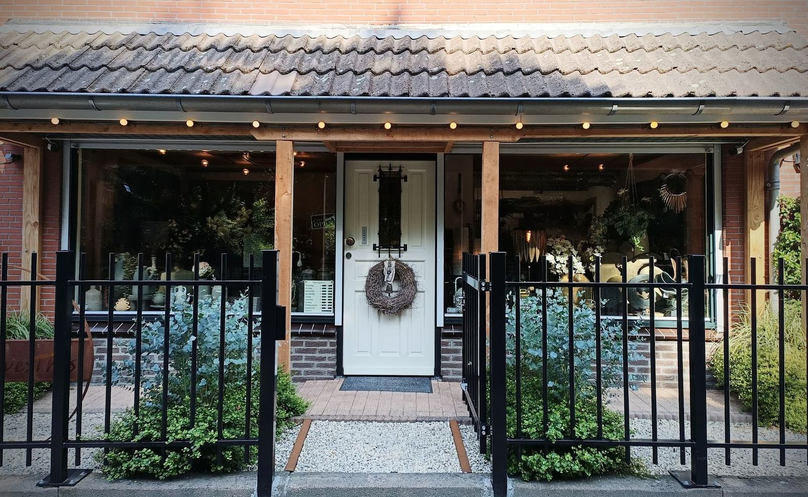
Landelijke en chique woondecoratie
Een winkel bomvol woondecoratie, cadeaus en kleinmeubelen in Sint Willebrord. Kom gezellig langs, dinsdag tot en met zaterdag vanaf 10.00 uur.
"Zeker de moeite waard om eens binnen te lopen. Super leuke woondecoraties." – Cynthia
Wat je bij ons vindt
Woondecoratie in de stijl van het nieuwe landelijk, die ook mooi te combineren is met andere woonstijlen.
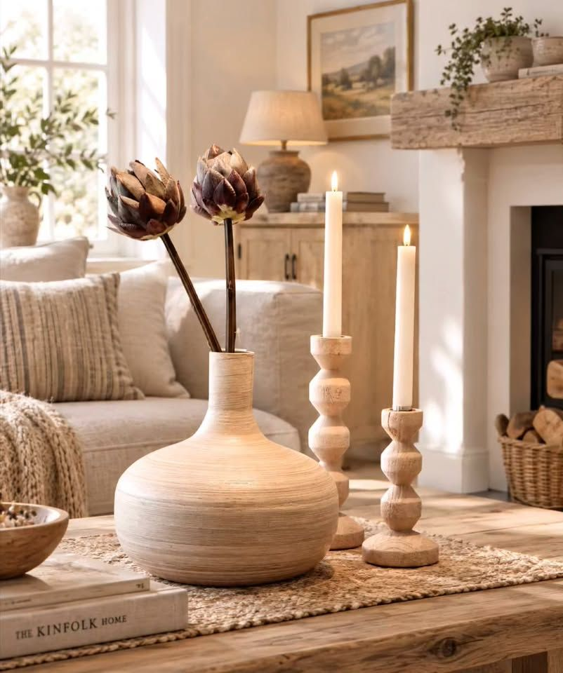
Woondecoratie
Vazen, schalen en accessoires
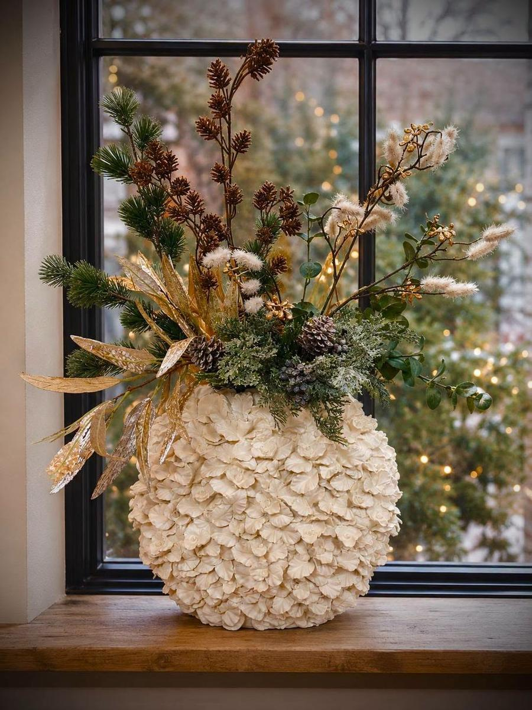
Bloemen & takken
Boeketten van takken en droogbloemen
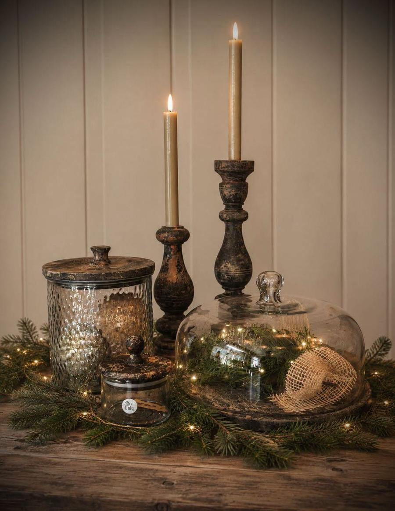
Kaarsen & licht
Kandelaars, lantaarns en windlichten
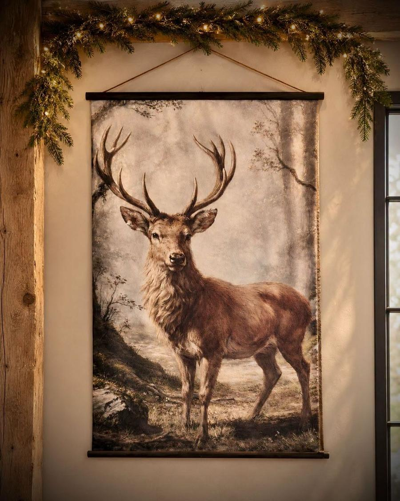
Wanddecoratie
Wandkleden en schilderijen
Daarnaast vind je in de winkel kleinmeubelen, kussens en plaids en kun je een cadeaubon kopen.
Bekijk wat er nu in de winkel staatEen kijkje in de winkel
Een knusse winkel die steeds weer bomvol staat met nieuwe spullen.
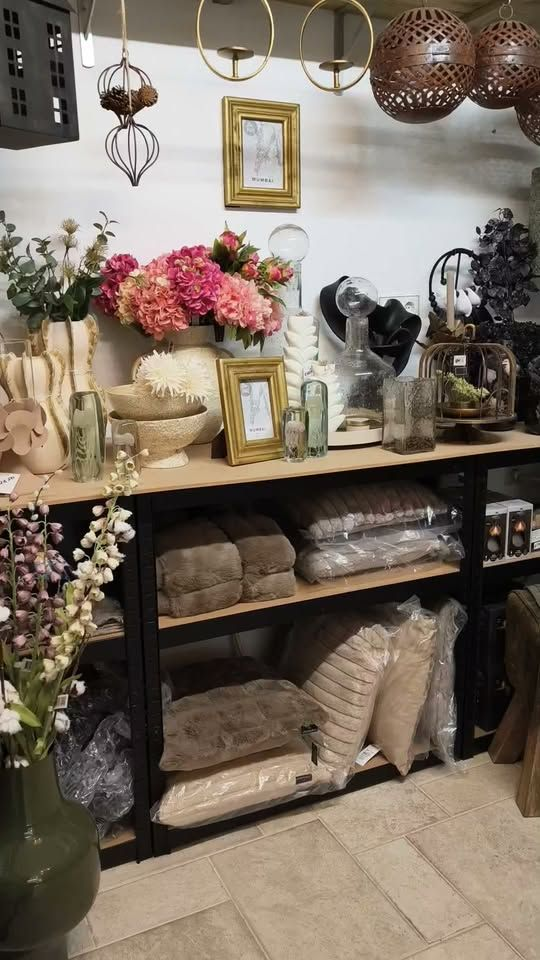
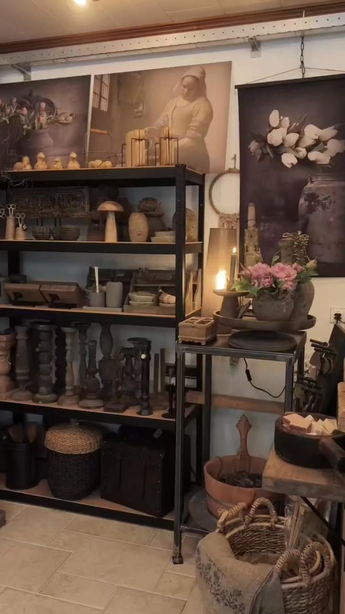
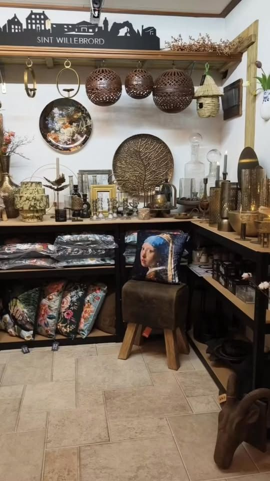
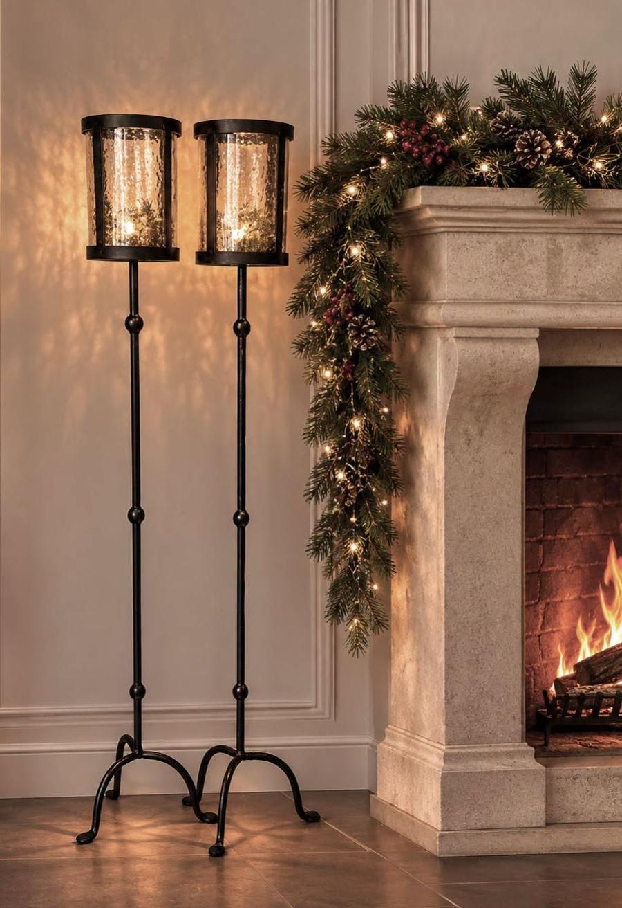
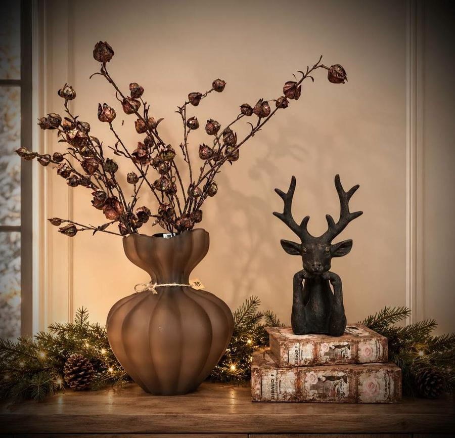
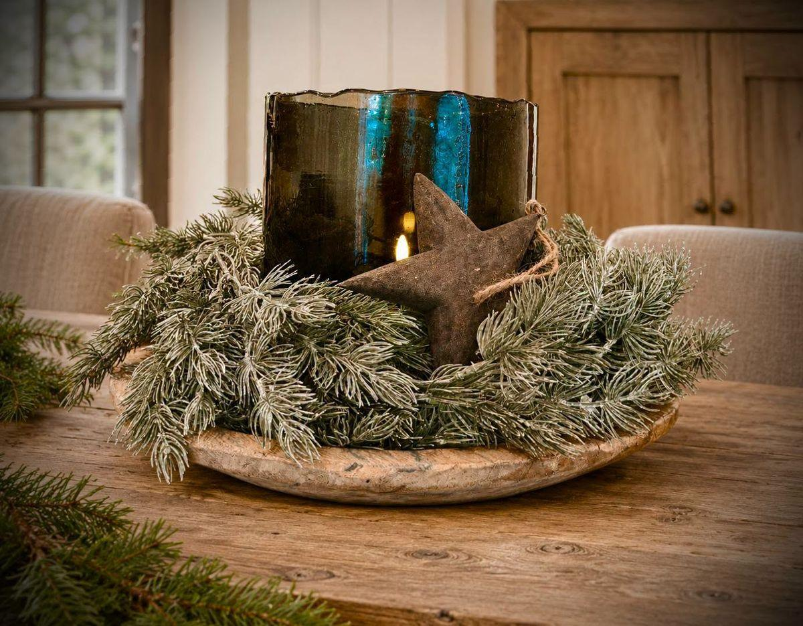
Klaar voor de feestdagen
De winkel staat nu vol kerst- en winterdecoratie: dennengroen, kandelaars, lantaarns en kransen. Mooi voor je eigen huis, of als cadeau.
Weet je niet goed wat je zoekt? Anita denkt graag met je mee.
Bekijk de collectieOver Anita
"Kom langs, ik help je graag om van je huis een écht thuis te maken."
Anita Loves This is de woonwinkel van Anita van Toren-van Zundert, aan de Pastoor Bastiaansensingel in Sint Willebrord. Voor haar is de winkel geen werk, maar haar passie. Dat zie je aan hoe alles is neergezet.
Wat klanten zeggen
"Zeker de moeite waard om eens binnen te lopen. Super leuke woondecoraties. Plus je wordt er zeer prettig geholpen!"
Cynthia J. · Google"Kleine knusse winkel met leuke woonaccessoires, leuke betaalbare dingen gekocht en Anita was erg vriendelijk (en spraakzaam!)"
Henk-Jan J. · Google"Gezellig winkeltje,met een heel gezellige eigenaar leuke en mooie spulletjes"
Anneke Z. · GoogleKom gezellig langs
Op zoek naar iets speciaals of wil je weten of iets nog op voorraad is? Stuur gerust een WhatsApp.
Anita Loves This
Woonwinkel in landelijke en chique decoratie